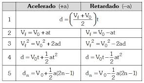

M.R.U.V.
El movimiento rectilineo uniformemente variado consiste en un cuerpo que se mueve a una velocidad que varia en el tiempo segun una aceleracíon o desaceleración la cual no varia respecto al tiempo, haciendo que el cambio de velocidad sea uniforme.
A la Izquierda se pueden observar las distintas formulas que se pueden aplicar segun que datos se poseen y cuales se quiere obtener.
La formulas de M.R.U.V. pueden ser aplicadas a diversos escenarios en la vida real, como cuanto tardaria en frenar un cuerpo arrastrandose sobre una superficie con rozamiento, o en este caso, para casos de caida libre y tiro vertical de un cuerpo.